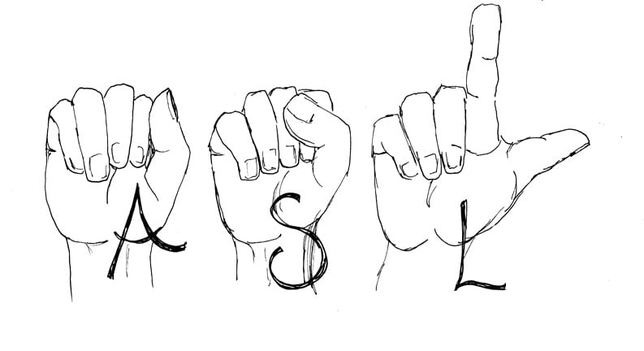

It is no secret that the COVID - 19 pandemic has impacted all of our lives in one way or another. Whether it has taken away one’s motivation or productivity, we have all felt its relentless effects. Unfortunately for many, the effects of the pandemic did not stop there. For those in the deaf and hard of hearing (HoH) community, the pandemic has taken away any sense of connection. It has negatively impacted their ability to understand and communicate with the people around them.
Before the pandemic, people in the deaf and hard of hearing community relied quite heavily on lip reading to communicate with the people around them. Despite the difficulty of this, it was the best and only was to understand what was being said, since the majority of people didn’t know (and still don’t know) much or any Sign Language. Although this method of lip reading had apparent challenges, people in the deaf and HoH community persevered to make it work so that they could interact with the rest of the world.
Sadly, once the pandemic came, face coverings were made mandatory in all public spaces, which has made lip reading for those who are deaf and HoH, unfeasible. Evidently, everyone in the deaf and HoH community have been unable to interact with anyone in public, making them feel even more disconnected and discluded from society.
The Covid19 pandemic continues to be persistent and long-lasting, with no end in sight for our near future. This means that we can no-longer “wait it out” and ignore these pressing issues. It is time that we take it upon ourselves to help make sure that no group of people is left out and deprived of connection, especially during this already difficult time.
Taking the time to learn American Sign Language (ASL) is the best way to do your part to make the world more equitable, right now. The language itself is made up of specific hand gestures to take the place of spoken words, as well as facial expressions to provide added context.
American Sign Language is an official and well respected language just like any other. Although ASL doesn't use the same sentence structure as say the English or French language, it does in fact have a distinct format. Just like all other languages, American Sign Language is made up of many vital elements that we use simultaneously without even knowing it. The five elements: phonology (the organization of sounds), morphology (the words used), syntax (rules of grammar), semantics (the meaning), and pragmatics (the context) are consistent across all languages. The one difference is the fact that ASL does not use phonology (the organization of sounds) since it is a “silent” language that relies on hand gestures and facial expressions.
By becoming either fluent in ASL or just picking up the basics, learning American Sign Language is a highly sought-after skill that will not only help you in your life, but helps to create a more diverse living space to be able to accommodate and communicate with those in the deaf and hard-of-hearing community.
If you are interested in learning American Sign Language, check out these links to start for free.
LINK 1 LINK 2 LINK 3 LINK 4